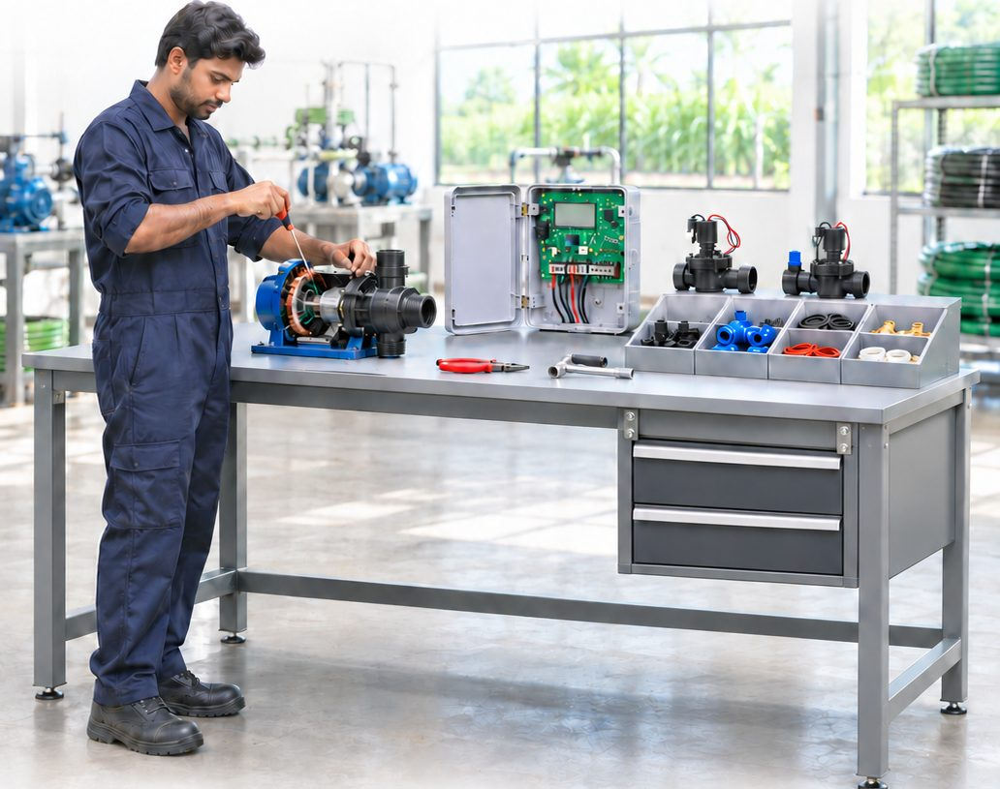

Manufacturing workspaces, built around the application.
Assembly, sub-assembly, rework, inspection, engineering, kitting and maintenance in one continuous operation. Each space places different demands on the bench, the storage and the material flow. We configure one modular system for all of them.

Sound familiar?
Most manufacturing workspace problems show up as lost output, quality escapes and time spent searching.
Stations that bottleneck the line
Loose parts, temporary trays and side tables slow output and cause mix-ups.
Rework that leaks back into production
Unplanned rework areas mix good and rejected items.
Inspection you can't fully trust
Mixed gauges and unstable benches reduce confidence in every reading.
Searching instead of building
Disorganised kitting and tool storage stop the line when parts aren't ready.
Seven application spaces. One configured system.
Choose a space to see the challenge, the standards involved and how we configure it.
Assembly & electronics assembly
Where components, modules and sub-assemblies come together into a finished or semi-finished product. The same station may need to support both general assembly and sensitive electronic build work, so it must be configured around the application rather than a single fixed layout.
ISO 9001 · IEC 61340-5-1 (ESD control)Loose components, uncontrolled part movement and excessive reaching increase mix-ups and slow output. Operators fall back on temporary trays and side tables. In electronics, hidden static damage shows up later in the field, and fixed-height worktops add fatigue over long shifts.
Scitec workstations for ESD-sensitive assembly, Pro workbenches for heavier tasks and Flexi systems where the layout must evolve. Base cabinets, overhead storage, bin rails and mobile cabinets keep tools and parts within reach; SS or GI worktops where durability matters; Link workstands for lighter bin-mounted work.
Outcome: A controlled, adaptable assembly station that supports quality output, smoother flow and less operator fatigue.

Sub-assembly
Where smaller modules are built and prepared before they move into final assembly. Components are pre-built, staged, checked and transferred in a controlled sequence.
ISO 9001 process control and traceabilityOn a general-purpose surface, parts spread across the station and it becomes hard to track what is complete. Without clear staging, multiple active jobs and variants create confusion, and the work becomes cluttered and hard to trace.
Base workstations for compact, dependable sub-assembly and Flexi systems for layouts that change with production. Mobile cabinets, base cabinets and flow racks stage components and keep work-in-progress organised; Link workstands for lighter-duty setups close to the line.
Outcome: A cleaner sub-assembly workflow that supports staged production, better part control and smoother line feeding.

Repair & rework
Where non-conforming parts, returns and corrective work are handled before a product moves forward again. Part of the quality loop, operating alongside production without disrupting the main flow.
ISO 9001 control of non-conforming productRework areas often become temporary or overloaded with mixed parts, making it hard to separate good items from rejected ones. When one bench must support opening, inspecting, repairing, retesting and reassembly, the process slows down and errors repeat.
Pro workbenches for heavier repair activity, with SS or GI worktops where the job involves dirt, fluids or frequent cleaning. Mobile cabinets, base cabinets and Link trolleys keep tools at the point of use; storage wall systems and segregation storage hold items in repair, under review or ready for release.
Outcome: A controlled rework area that reduces confusion, speeds up corrective work and keeps non-conforming items contained.

Testing, inspection & calibration
The quality checkpoints of manufacturing: dimensional inspection, functional testing, verification checks and calibration of gauges and tools. The integrity of the measurement depends on the quality of the setup.
ISO 9001 · ISO 10012 · ISO/IEC 17025 / NABL-aligned practiceMixed tools and gauges, an unstable bench or a cluttered surface slow inspection and reduce confidence in the reading. In calibration, disorganised storage leads to confusion between calibrated and uncalibrated instruments, which becomes a quality issue for the whole plant.
Scitec workstations and Pro workbenches for stable inspection and calibration, with Link workstands where a lighter setup is enough. Base cabinets keep test items and documents organised; Link trolleys and mobile cabinets move instruments between stations without losing control of the workflow.
Outcome: A stable, traceable inspection environment that supports measurement confidence, cleaner handling and audit readiness.

R&D & engineering labs
Used for prototyping, design validation, trial builds and technical problem-solving. These spaces sit between concept and production and must support experimentation without losing control of tools and instruments.
ISO 9001 · IEC 61340-5-1 where electronics are handledProjects change, instruments move, and a fixed lab has to be rebuilt for every new trial. That adds downtime and clutter and reduces time for real development. Poor storage and cable routing make prototypes and instruments harder to control.
Flexi systems for labs that need to reconfigure easily, Scitec workstations for technical and ESD-sensitive work and Pro workbenches for heavier support. Base cabinets, overhead storage, cable management and mobile benches keep the lab organised as projects evolve.
Outcome: A flexible engineering workspace that supports prototyping, protects sensitive work and adapts as projects evolve.

Parts, tools storage & kitting
The control points behind the shop floor: fast-moving consumables, picked kits, tools and small components issued in sequence and returned in a controlled way.
ISO 9001 material handling · FIFO and issue controlDisorganised storage shows up everywhere: operators search for items, kit completeness is hard to verify and small parts get mixed between jobs. Poor kitting causes line stoppages when materials are not ready as the job reaches the station.
Base cabinets for compact storage, storage wall systems for dense organisation, mobile cabinets for moving tools and parts, and flow racks for first-in-first-out movement of kits. Issue-counter storage supports controlled handover, combined with bin rails, shelf units and lockable storage.
Outcome: An organised storage and kitting area that speeds up issue, reduces search time and supports cleaner flow to the line.

Maintenance
Where breakdown response, preventive maintenance, adjustments and routine servicing happen, often under time pressure. The workspace must be dependable, easy to clean and ready for planned and unplanned work.
ISO 9001 · workplace safety and housekeeping practiceHeavy components, oil and grease, and tools moving between jobs all day. Weak benching and storage lead to clutter, lost time and damage to tools and equipment, and it becomes hard to track parts awaiting repair and tools in use.
Pro workbenches for heavy-duty maintenance, SS, PLW or GI worktops for dirty or fluid-prone jobs, and mobile cabinets or Link trolleys for moving tools across the floor. Base cabinets, storage wall systems and mobile storage create a disciplined maintenance station.
Outcome: A dependable maintenance workspace that supports faster servicing, easier cleaning and better control over tools and parts.
Fundamentals of manufacturing workspace design.
- Precision
- Electrical protection
- Traceability
- Tool control
- Ergonomics
- Repeatability
- Adaptability
The Furnisys workspace ecosystem.
Work systems, storage systems and accessories designed to work as one.
Work systems

Base Series Industrial Workbench
All purpose workbench series designed to functionally serve your basic workspace needs.

Pro Series Heavy Duty Workbench
An industrial grade workbench series designed to withstand rough work environments.

Scitec Series Technical Workbenches
An adaptable workbench series designed for diverse technical environment.

Flexi Modular Workstation System
Our most flexible workstation — designed to adapt, expand, and reconfigure effortlessly as your workspace needs evolve.
Storage systems

Base Storage Cabinet
"Modular, high-capacity storage built to handle heavy loads" adapts to changing workspaces and demanding storage needs.

Mobile Cabinets
Designed for workflows that require tools and parts on the move, Furnisys mobile cabinets combine storage and mobility in one solution

Link Flow Racks
Experience efficient material handling with LINK Flow Racks—designed to streamline picking, sorting, and assembly processes.

Stands & Trolleys
Configure stands and trolleys to securely hold or transport parts, tools, and test equipment—ideal for use across production, assembly, repair, and maintenance environments.
Go deeper by application.
Electronic Assembly Storage Solutions
Furnisys workstations are engineered to support precise and efficient electronic assembly tasks, whether it…
ExploreMachining and Fabrication Storage Solutions
As cellular manufacturing becomes more common, workers like assemblers, technicians, and engineers require…
ExploreMaintenance and Repair Storage Solutions
For the most challenging maintenance and repair tasks, you need a Furnisys's heavy-duty workbench. Our…
ExploreMedical Manufacturing Storage Solutions
From precision tasks to process control, Furnisys helps you stay productive while meeting the high standards…
ExploreProof from manufacturing floors.
Eight packaging workstations for a bearing manufacturer
An ESD-safe testing lab for medical equipment
Packaging workstation for a tool & die manufacturer
Trusted by manufacturers, laboratories and institutions across industries. See our clientele
Frequently asked questions.
Which standards do manufacturing workspaces need to support?
Most manufacturing spaces work to ISO 9001 process control and traceability. Electronics and medical assembly add IEC 61340-5-1 ESD control, and calibration areas may follow ISO 10012 or ISO/IEC 17025 / NABL-aligned practice. We configure worktops, grounding and storage to support these requirements.
Can one system cover assembly, inspection, maintenance and storage?
Yes. Work systems (Base, Pro, Scitec, Flexi, Link), storage systems (base, mobile and tall cabinets, flow racks, issue counters) and accessories share standard modules, so each space gets its own configuration within one consistent system.
Can the layout change when our products or volumes change?
Yes. Stations are built from standard parts. You can add drawers, power, uprighters or whole bays, or move stations between lines, without replacing what you already have.
Do you plan the layout before manufacturing?
For confirmed projects we carry out a site study and prepare 2D and 3D layouts and a proposal before anything is manufactured.
How we engage.
Share your brief
Scope, application spaces, timelines and any drawings.
Specialist discussion
A workspace specialist reviews the brief with your team.
Site study & layout
For confirmed projects: site study, 2D/3D layout and proposal.
Manufacture & install
Built in Navi Mumbai, installed and supported by our team.
Planning a new line or facility?
Share your project brief. Every brief is reviewed by a workspace specialist who will contact you to discuss scope, layout and next steps.
Application-led design
Every station configured around the process, not a catalogue.
One accountable team
Design, manufacturing and installation from Navi Mumbai.
Built to scale
Standard modules that grow with your lines.